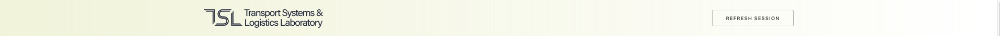
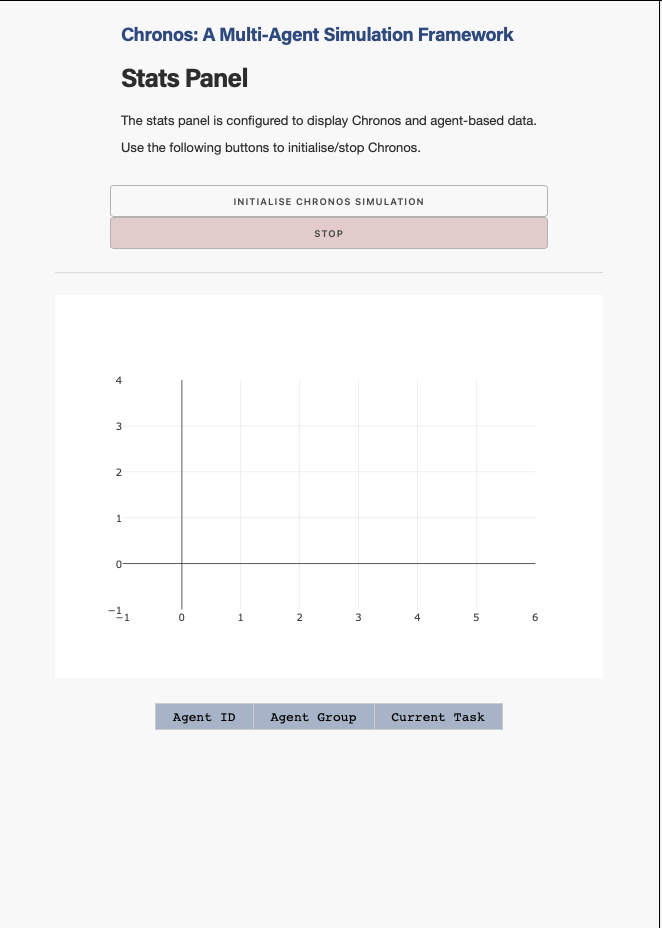
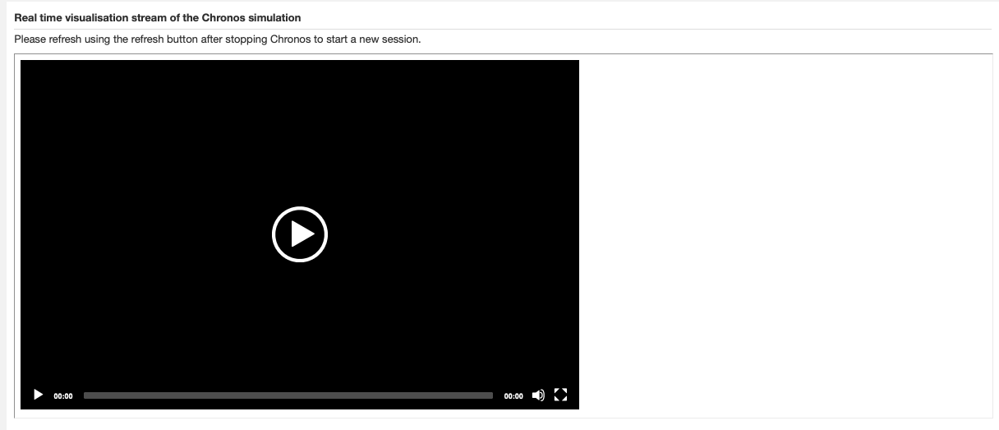
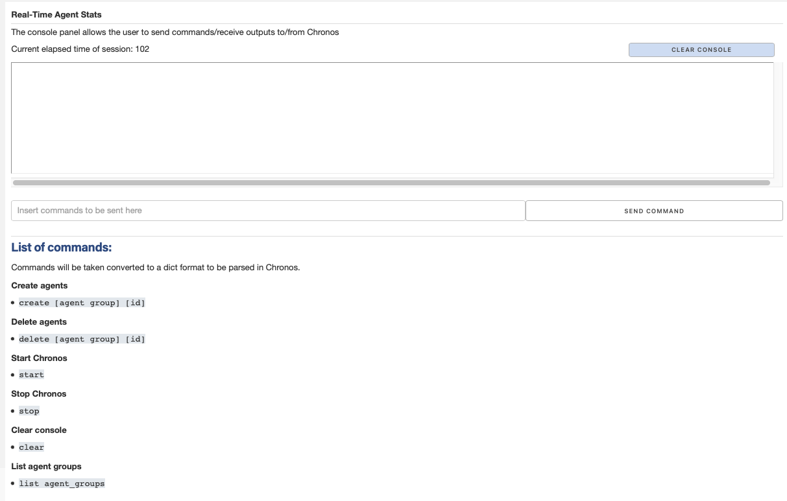

Running and expectations¶
Once your environment is set-up, run python app.py on your terminal and navigate to https://localhost:8050. You should see the following web interface show:

Figure showing the web interface at http://localhost:8050.
Functionality of the Web Interface¶
First, let’s go through the different parts of the web interface.
The Header

Header of the web interface.
Nothing too interesting about the header, just a note that the refresh button allows you to reset the session. Note that it may be buggy (for eg. when the video stream is running, it is advisable to stop Chronos before pressing the refresh button. Clicking the refresh button alone will not stop Chronos, and hence the session will not be discontinued.)
The Stats Panel

Stats panel of the web interface.
The stats panel contains two basic buttons - the initialise chronos (start) button, and the stop chronos (stop) button. These buttons will start/stop the Chronos subprocess (more on this in the section - Introduction to Core Components). A note: Do stop the Chronos simulation with the stop button before refreshing the page with the refresh button to completely reset the session.
Below the buttons, there is a graph (non-functional for now) that can render information changes with time alongside the Chronos simulation. This can be programmed depending on the specific Chronos instance being built (more on this in the section - How to Further Develop).
Finally, below the graph, there will be a table that updates any agent-related infomation that you wish for it to be displayed. Any changes in the Chronos simulation can be configured to be displayed on the table here. This will be explained further in the sections “Core Design Principles” and “How to Further Develop”, but in short, the self-updating table can be programmed to display (including defining your own columns) whatever you wish for it to, based on the specific Chronos application.
The Video Streamer

Video streamer of the web interface.
The video streamer is used to stream visualisations from the pygame environment developed within Chronos. This is made possible using the pygame_streamer object (more on this in the section - Introduction to Core Components.
Currently, there is a slight latency delay between the real-time pygame environment as well as that being streamed on the web interface. This would be one of the features that has to be fixed eventually.
The Console

Console of the web interface.
The console is used primarily to:
Send commands to Chronos during the simulation.
Display any console logs from Chronos during the simulation.
Below the console is a basic list of commands that is being shown as reference for the user of the web interface. Most notably, you can start and stop Chronos from the console, as well as clear the console screen if you wish. The current web interface core example also has features to create, delete and list agent groups, which are linked with the updating table on the left. Note that the functionality of these commands (create, delete and list) in the chronosweb_core branch do not actually mean anything - the dummy agent groups contained in this branch’s instance of Chronos are purely for testing the functionality of the web interface.
Further information on how to develop your own commands will be in the section - Core Modules for Development.
Short Demo Video¶
Since the documentation is written markdown, there is no way to embed a video here. I have uploaded the demo video on youtube as unlisted so do check out the demo video here.